Drone It

Project Information
Drone It is a VLOS (visual line of sight) drone simulator created to solve a common problem: limited class time, shared equipment and unpredictable weather. Created for our client from Noorderpoort, it offers the students a gamified way to practice outside of school hours.
Unlike standard first-person simulators, Drone It mimics real life piloting by forcing the player to keep eyes on the drone from a distance. The simulator features three main modes:
- The Hangar: Tutorial pattern exercises and free-roam tracks for control practice.
- Outside: Bigger flying area were wind can be turned on.
- The Hub: The Hub: The lounge that connect outside with the hangar. But also a place were a workbench for swapping different drone components is.
It supports both standard gaming controllers and real drone controllers, to keep the experience open to every student!
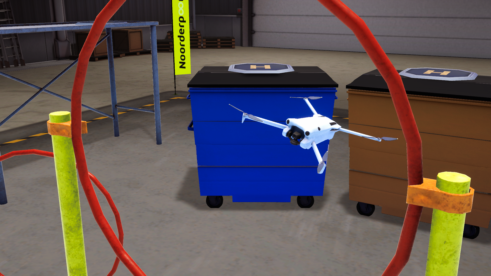
My Contributions
Programming
- Made all the tutorials for the drone, plus a way to play them in order or to pick one on its own.
- Built a system to choose different layouts to fly around in the hangar.
- Made sure all the buttons and screens worked with everything in the game.
- Built a universal interaction system.
- Created all the in-game menus.
- Made it easy to switch between playing as the person on foot and flying the drone.
- Created the player & camera movement.
- Added a camera zoom in and out feature for flying the drone.
- Added an option to turn tutorial on or off.
Click here to see Code, Challenges & Implementations
Tutorial Manager & Tutorials:
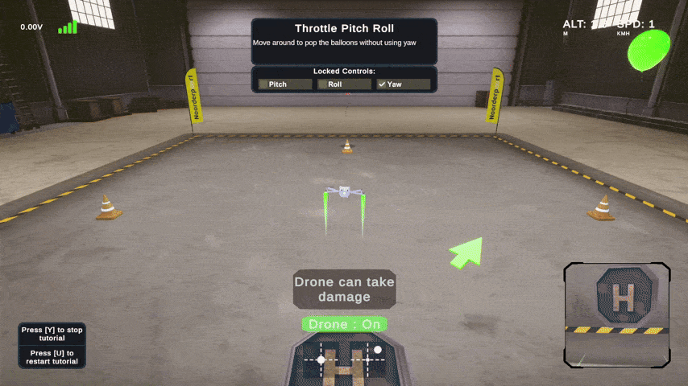
What I have made:
I have created an entire tutorial system with different tutorials. These are the tutorials that I have created: Waypoint, Orbit, Hold Height and Landing.
Challenge & Solution:
During this process, I ran into an issue, since every tutorial had a bunch of waypoints for the drone to fly towards to. But assigning these waypoints in the unity inspector would become annoying if you have to do it over and over again. I thought about using tags, but that searches the whole scene and could grab wrong waypoints for example. Instead, I made the parent object look at its own children objects. I used C# LINQ (Where / OrderBy / StartsWith) to ignore all the other children and only look for the waypoints. I was also able to give the waypoints a number, so it could sort the children. So it starts at waypoint 1, then 2, etc.
Code Snippet:
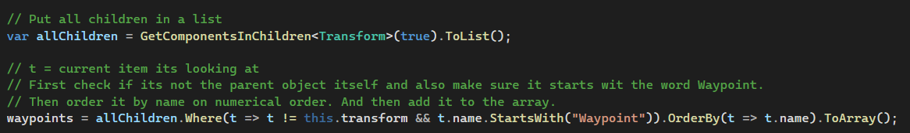
What I learned from this challenge:
- I learned how to use some LINQ methods to keep code clean and search for specific objects of a scene.
Modular Interaction System:
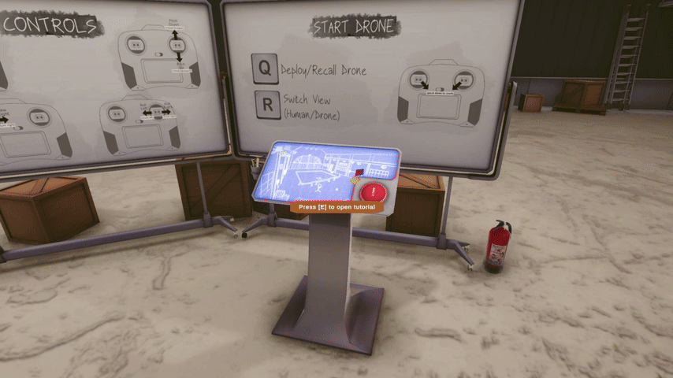
What I have made:
I made a modular interface-based interaction system that allows the player to look at an interactable object in the world and see at the correct keyboard prompt on their screen and interact with it.
Feature Information:
Instead of writing custom interaction logic for every single object, I built a modular system using interfaces and Unity's new input system.
- Interface-based system: Any object in the game can become a interactable, simply by having a script that inherits from the IInteractable interface.
- Keybind prompt: The system reads the player's active keybindings and displays it inside the UI.
Code Snippet:
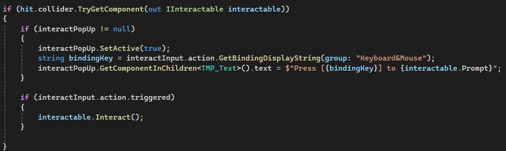
What I learned from this challenge:
- Interface-based sytem: Any object in the game can become a interactable, simply by having a script that inherits from the IInteractable interface.
- Keybind prompt: The system reads the player's active keybindings and displays it inside the UI.
Editor Screenshot Tool:
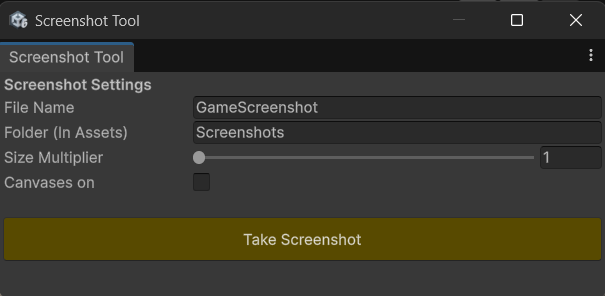
What I have made:
I created a custom Unity tool that allowed us to capture in-game screenshots directly inside the editor without cluttering UI elements or manually hiding canvases.
Challenge & Solution:
Taking manual screenshots for tutorials and marketing materials meant dealing with turning on/off the UI every single time. So the way I fixed it was by creating a custom Unity tool with configurable fields like resolution scaling, folder path and file name. To handle the UI cleanly, the script temporarily disables all active canvases, takes the screenshot and uses EditorApplication.delayCall to safely turn them back on so the UI doesn't accidentally sneak into the screenshot.
Code Snippet:
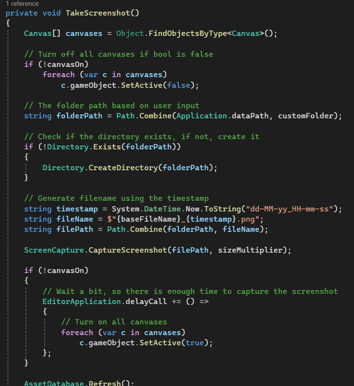
What I learned from this challenge:
- How to create custom Unity Editor windows with GUI elements like buttons, sliders and text fields
- How to use EditorApplication.delayCall to handle frame timing.
- Something I found funny to see, you always have to reset GUI.backgroundColor back to the default color after for example giving color to a button. Otherwise the entire Unity Editor becomes that color. Which you can see on the code snippet down below.
Code Snippet:
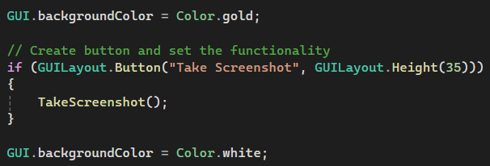
UI Design
- Designed the UI layout for the tutorials/layouts menu.
- Created the flying UI that shows helpful information to the player like battery, signal strength, altitude, speed, controller stick movement and drone damage.
- Made the instruction UI for when players do a tutorial (like tips and which controls are locked).
- Designed the main menu, credits menu and pause menu.
Click here to see the UI designs
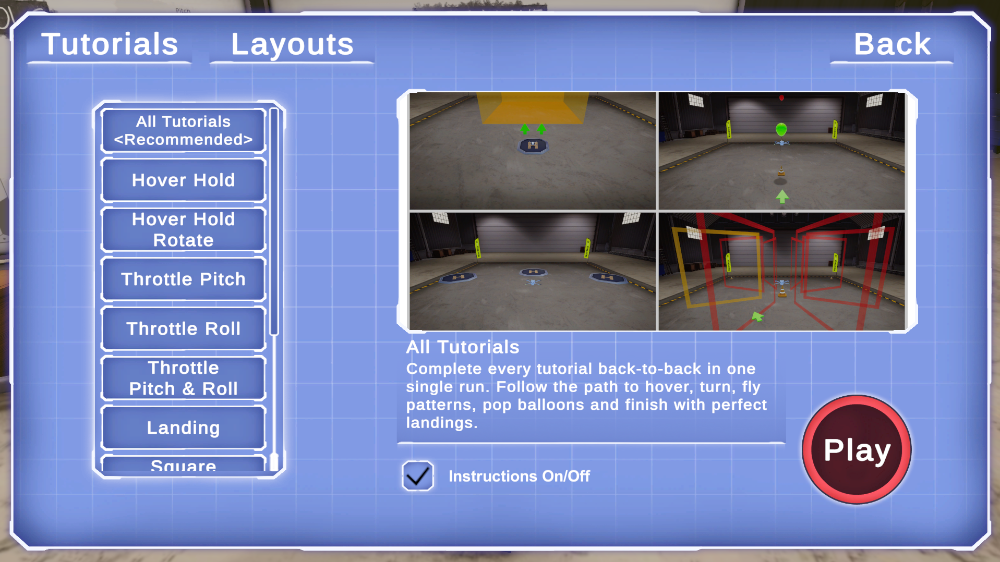
This is the UI design that shows when choosing a tutorial. This screen includes the 2 different categories at the top, all the tutorials, a small description, if you want the instructions to be turned on/off and the start button. (art is not made by me)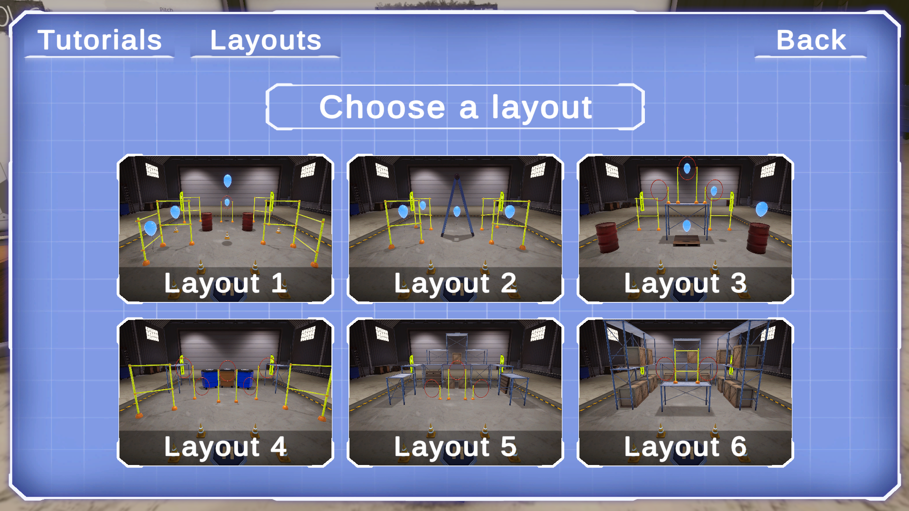
This is the UI design that shows when choosing a hangar layout. This screen includes the 2 different categories at the top, all 6 different layouts (3 with balloons to pop and 3 without balloons). (art is not made by me)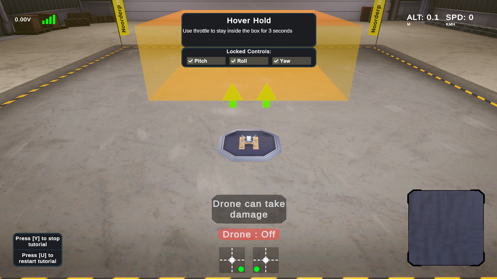
This is the UI design for when you are flying the drone during a tutorial. This screen includes the drone statistics (battery, signal strength, altitude and speed), the instructions and show which controls are locked, how to restart/stop the tutorial, the drone camera and the controller sticks moving.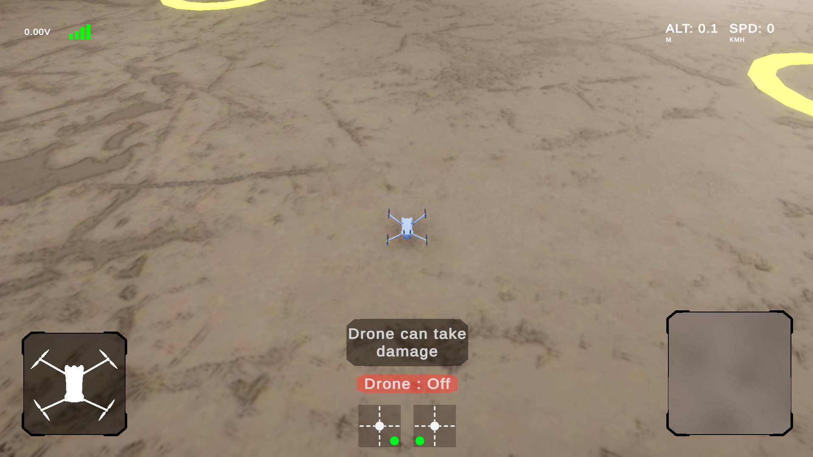
This is the UI design for you are flying the drone freely. This screen is almost the same as with a tutorial, except here you can see the damage the drone has received and the instructions are removed.Special Thanks
A lot of the work showcased above was a team effort and for that I'd like to thank everyone at Knakworst Studio (our project group name) and our client from Noorderpoort!